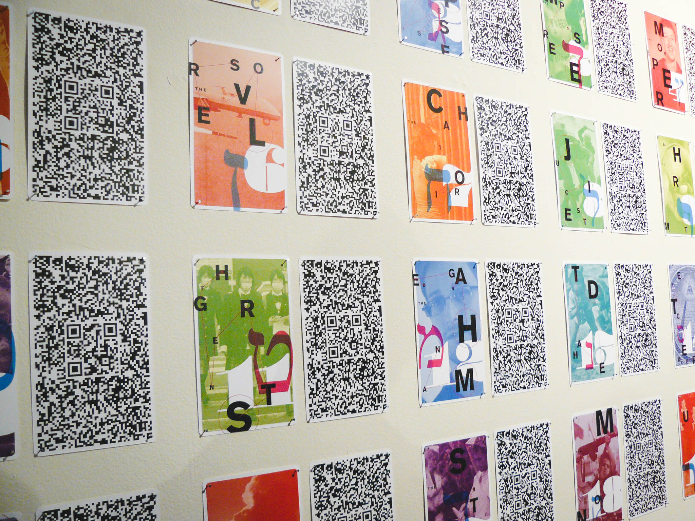
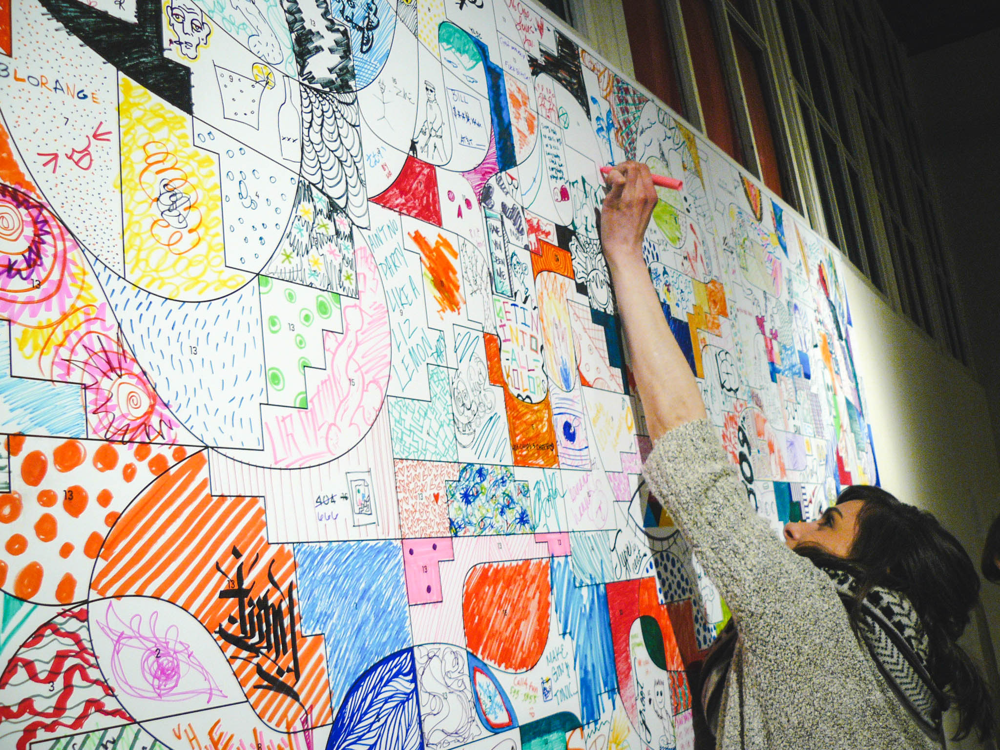
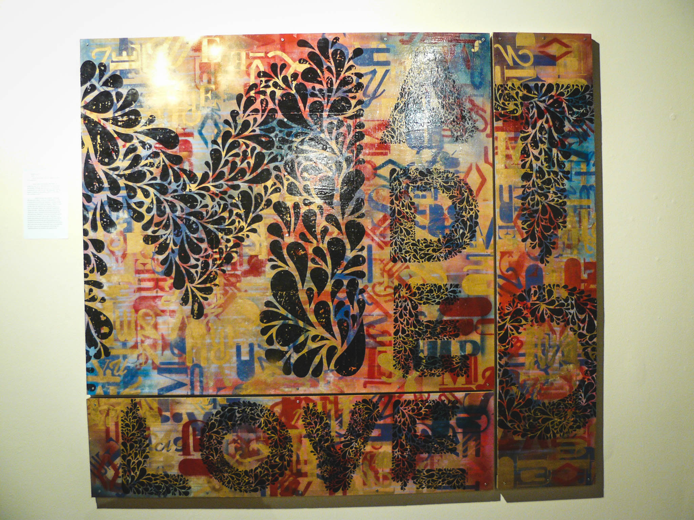
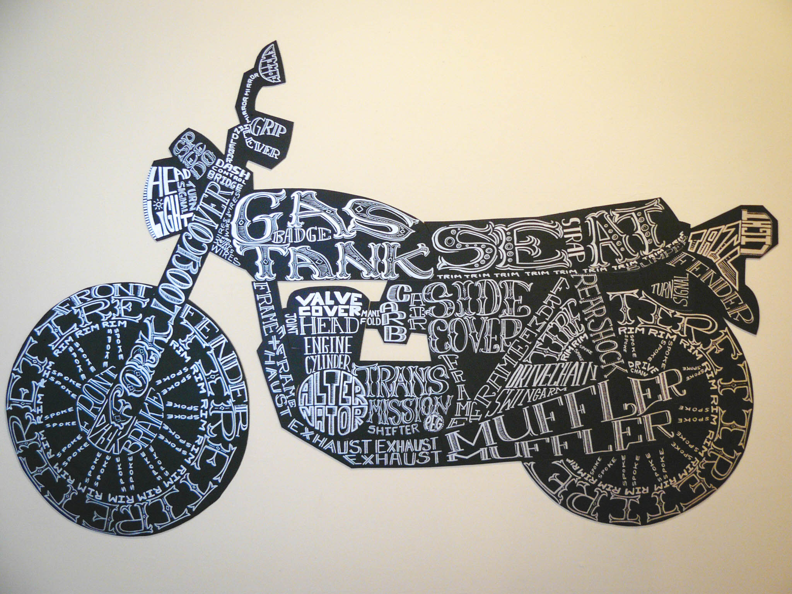
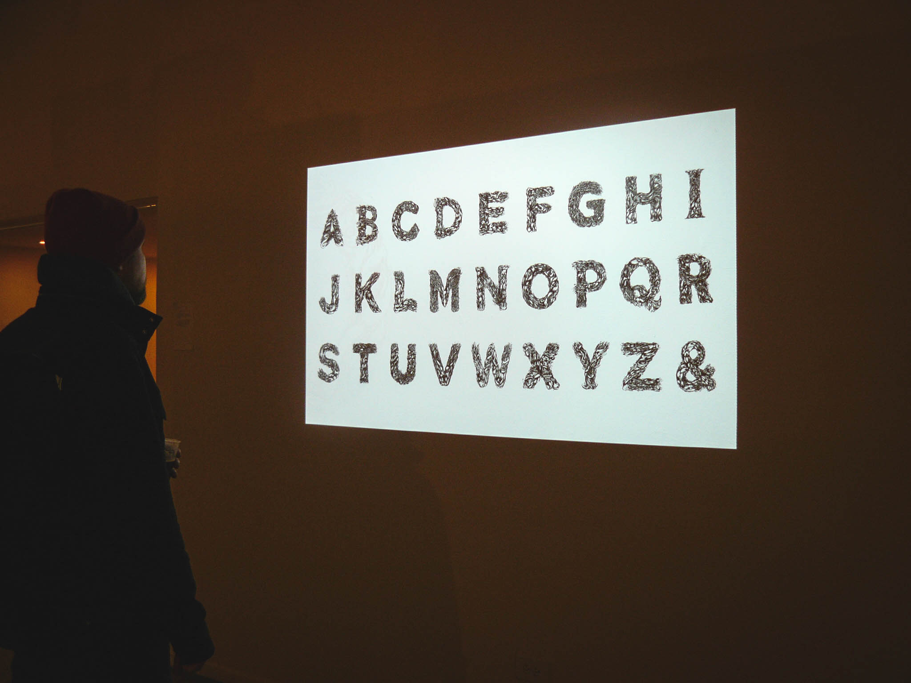
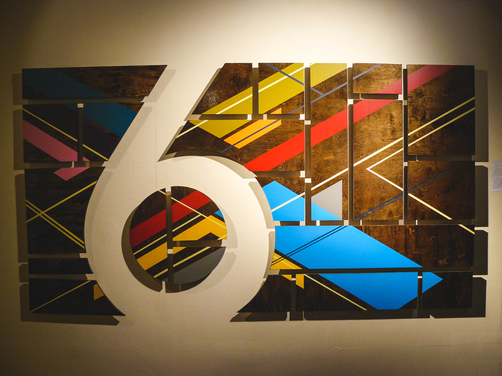

Typeforce 6, the Annual Showcase of Emerging Typographic Allstars, premiered February 13, 2015. Twenty-five selected typographic and letter based designers/artists showcased their work at the Co-Prosperity Sphere in Chicago’s Bridgeport neighborhood. The well-attended event provided a space for designers to communicate visual art in type and demonstrate their inspirational skills through a diverse array of media. Below are some photos and pieces from Typeforce 6. The exhibit is now open for viewing on from February 14-26 by appointment.
left – Offal by Freddy Eschrich + Rob Wilson. right – Kerning Makes All The Difference by Stephanie Kim, Kara Coyle + William Ehrlich

Grilli Type by Thierry Blancpain, Marc Kappeler, Rafael Koch, Noel Leu, Reto Moser, Mauro Paolozzi, Tobian Rechsteiner + Mirco Schiavon
Tarot Five-Point Oh! 9 by Matt Wizinsky
Color By Number by Stephanie Kim, Tuan Pham + Justin Tang
Made to Love by Sarah Sears
Motypecycle by Gabe Lanza
Amoeba Type by Jeremy Leung
6 by Tom Maher